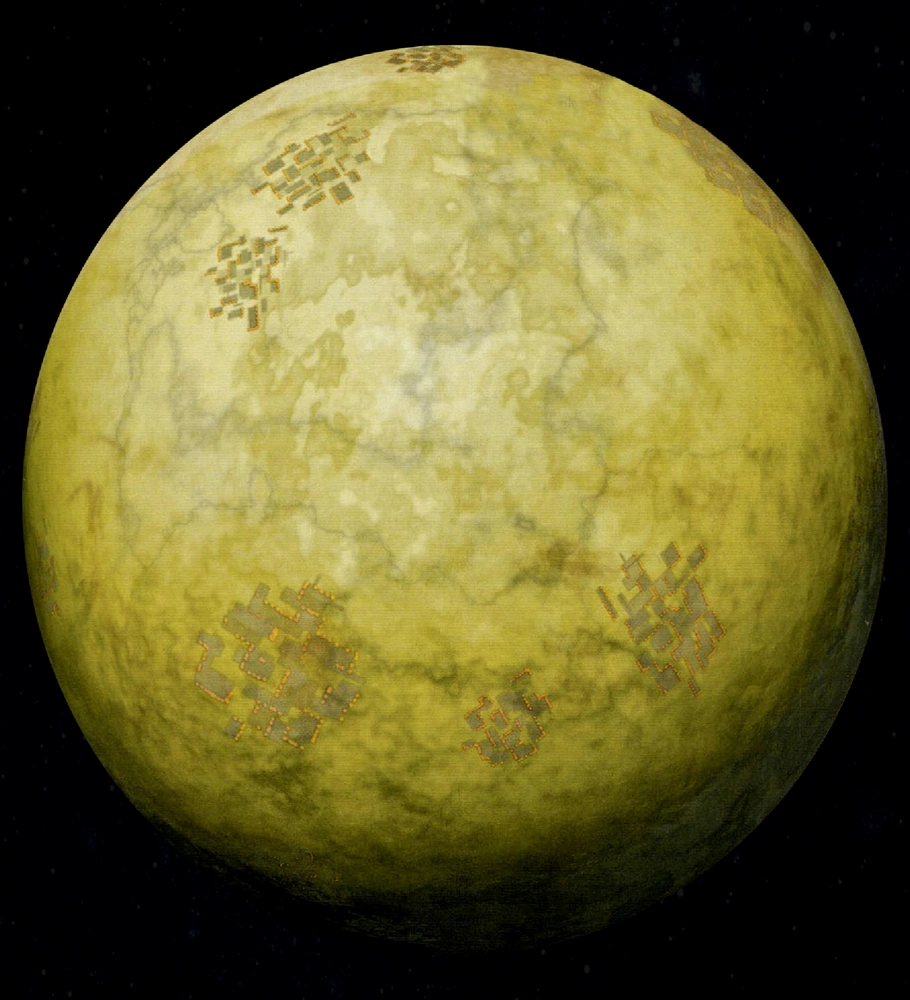

Mandalore est une planète de la Bordure Extérieure de la Galaxy. Elle est le monde d'origine des Mandaloriens, un peuple guerrier et téméraire qui affronta les Jedi pendant de nombreuses années, notamment durant l'ère de l'Ancienne République. Des années de guerre lessèrent la planète inhospitalière, forçant les Mandaloriens à vivre au sein de villes protégées par des dômes.
Calculez ici le nombre de Mandaloriens qui suivent encore la Voie (les Mando'ad'e) et ceux qui suivent la République (les Evaar'ad'e).
Population :
Nombre de Mando'ad'e :
Nombre de Evaar'ad'e :
| Région | Territoire de la Bordure Extérieure |
| Secteur | Mandalore |
| Période de révolution | 366 jours |
| Durée de rotation | 19 h |
| Atmosphère | Respirable |
| Climat | Inhospitalier |
| Paysages | Désert; Villes protégées par des dômes |
pour plus d'infos sur la culture Mandalorienne, voir: Mandalorian Culture